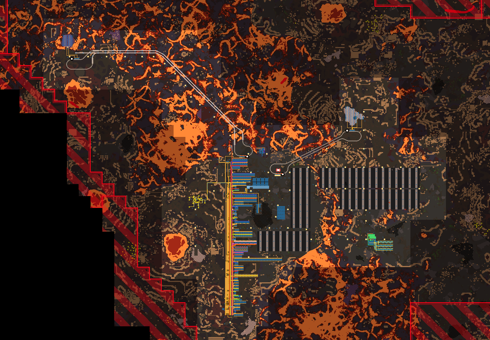

Vulcanus
Vulcanus avoids acid neutralization in favor of receiving ice from space platforms. It also receives and prefers to use calcite from space platforms.
Vulcanus receives legendary calcite and turns it into legendary rock; and it receives legendary plastic and returns legendary LDS, copper, and steel beams.
Vulcanus was powered by solar until fusion became available.
Tesla turrets were used to kill demolishers, until the railgun was available.
Symbolic Map
